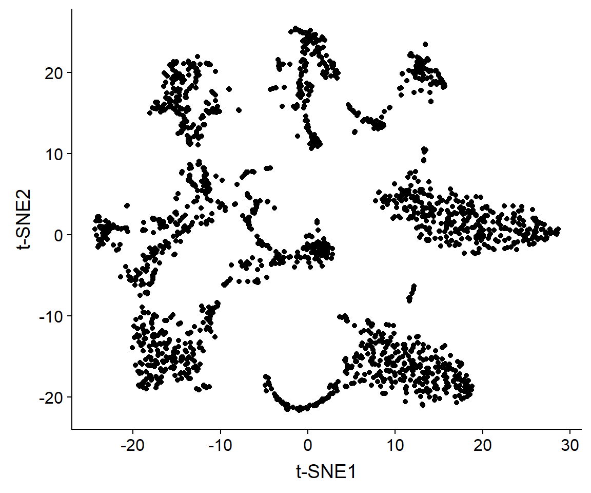
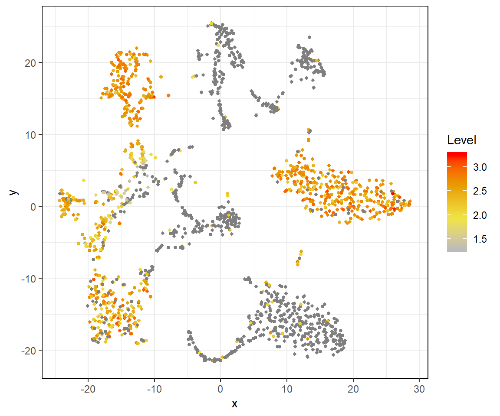
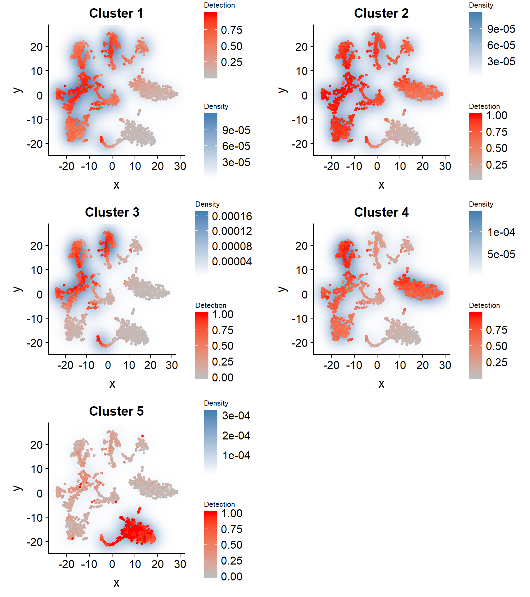

Application of singleCellHaystack on 2D t-SNE coordinates
Alexis Vandenbon
2019-06-17
a02_example_tsne2D_default.RmdPreparing the input data
The data used in these examples can be found here. We recommend downloading the .rda file and loading it using the load() function. You can also download the individual data files separately.
load(url("https://genomics.virus.kyoto-u.ac.jp/alexisvdb/singleCellHaystack/tabula_muris_marrow_P7_2.rda"))
ls()
#> [1] "dat.detection" "dat.expression" "dat.pca" "dat.tsne"
#> [5] "dat.umap"This data should include the following objects:
-
dat.expression: a matrix object with the expression of genes (rows) in each cell (columns). -
dat.detection: a logical matrix object with the detection of genes (rows) in each cell (columns). TRUE means detected, FALSE means not detected. -
dat.pca: the output of PCA. This data.frame contains thefirst 50 pricipal components. -
dat.tsne: a data.frame with t-SNE coordinates (2D). -
dat.umap: a data.frame with UMAP coordinates (2D).
Let’s have a look at the t-SNE plot:
ggplot(dat.tsne, aes_string(x = "V1", y = "V2")) + labs(x = "t-SNE1", y = "t-SNE2") + geom_point()
There are several groups of cells,although the borders between are not clear and several might consist of additional subclusters. We can use singleCellHaystack to find genes with biased expression patterns in this 2D plot.
Application of singleCellHaystack in default mode
First, load the package, and set a random seed to ensure replicability.
library(singleCellHaystack)
#>
#> Attaching package: 'singleCellHaystack'
#> The following objects are masked _by_ '.GlobalEnv':
#>
#> dat.expression, dat.tsne
set.seed(1)Next, run haystack on the t-SNE coordinates. These are 2D coordinates, so we set ‘method’ to ‘2D’. We also give the detection values as input to ‘detection’. This example dataset is relatively small, containing 1,981 cells, so running ‘haystack’ should take just 1 to 3 minutes to finish.
res.tsne <- haystack(x = dat.tsne, detection = dat.detection, method = "2D")
#> ### calling haystack_2D()...
#> ### setting parameters...
#> ### calculating Kullback-Leibler divergences...
#> ### ... 1000 values out of 12030 done
#> ### ... 2000 values out of 12030 done
#> ### ... 3000 values out of 12030 done
#> ### ... 4000 values out of 12030 done
#> ### ... 5000 values out of 12030 done
#> ### ... 6000 values out of 12030 done
#> ### ... 7000 values out of 12030 done
#> ### ... 8000 values out of 12030 done
#> ### ... 9000 values out of 12030 done
#> ### ... 10000 values out of 12030 done
#> ### ... 11000 values out of 12030 done
#> ### ... 12000 values out of 12030 done
#> ### starting randomizations...
#> ### ... 10 values out of 200 done
#> ### ... 20 values out of 200 done
#> ### ... 30 values out of 200 done
#> ### ... 40 values out of 200 done
#> ### ... 50 values out of 200 done
#> ### ... 60 values out of 200 done
#> ### ... 70 values out of 200 done
#> ### ... 80 values out of 200 done
#> ### ... 90 values out of 200 done
#> ### ... 100 values out of 200 done
#> ### ... 110 values out of 200 done
#> ### ... 120 values out of 200 done
#> ### ... 130 values out of 200 done
#> ### ... 140 values out of 200 done
#> ### ... 150 values out of 200 done
#> ### ... 160 values out of 200 done
#> ### ... 170 values out of 200 done
#> ### ... 180 values out of 200 done
#> ### ... 190 values out of 200 done
#> ### ... 200 values out of 200 done
#> ### estimating p-values...
#> ### returning result...Let’s have a look at the most biased genes. The most strongly biased gene is Alox5ap. We can plot the expression an detection of this gene using the plot_gene_haystack function. From the plots we can see that Alox5ap is not detected in the upper right and lower right group of cells.
show_result_haystack(res.haystack = res.tsne, n = 5)
#> D_KL log.p.vals T.counts
#> Alox5ap 1.0284127 -68.18293 1354
#> Lyz1 0.8561399 -67.30395 1183
#> Clec4a2 0.7561418 -66.62938 947
#> Cybb 0.8090982 -65.94909 1172
#> S100a10 0.7155384 -64.46251 1094
# plotting detection of this gene
plot_gene_haystack(x = dat.tsne, gene = "Alox5ap", expression = dat.detection)
# plotting log expression of this gene
plot_gene_haystack(x = dat.tsne, gene = "Alox5ap", expression = log10(dat.expression)) 
Next, let’s take the top 1000 biased genes, and cluster them by their expression pattern in the 2D t-SNE coordinates. Here we use hclust_haystack, which uses hierarchical clustering. Alternatively, we could use kmeans_haystack for k-means clustering.
# get the top 1000 biased genes in the result
res.top <- show_result_haystack(res.haystack = res.tsne, n = 1000)
# cluster biased genes by their expression pattern in the 2D plot
genes.top <- row.names(res.top)
res.hc <- hclust_haystack(x = dat.tsne, genes = genes.top, detection = dat.detection)hclust_haystack returns as result a hclust tree, which we can cut into clusters using the cutree function. Here, we arbitrarily set the number of clusters to 5.
res.hc.clusters <- cutree(res.hc, k=5)
table(res.hc.clusters)
#> res.hc.clusters
#> 1 2 3 4 5
#> 454 289 104 133 20Cluster 1 contains 454 genes, and the smallest cluster (cluster 5) contains just 20 genes.
Let’s run through the 5 clusters and plot their averaged detection pattern using plot_gene_set_haystack, which is similar to plot_gene_haystack but uses a set of genes as input instead of just 1 gene.
pl <- lapply(1:5, function(cluster) {
gene.set <- names(res.hc.clusters)[res.hc.clusters==cluster]
plot.title <- paste0("Cluster ", cluster)
p <- plot_gene_set_haystack(x = dat.tsne, genes = gene.set, detection = dat.detection)
p + ggtitle(plot.title) + theme(legend.title = element_text(size = 8))
})
plot_grid(plotlist = pl, ncol = 2)
res.hc.clusters["Alox5ap"] # the most biased gene is in cluster 4
#> Alox5ap
#> 4The most biased genes, Alox5ap, was clustered into cluster 4. Comparing its expression pattern (see above) with that of each cluster, we can indeed see that it fits most closely with that of cluster 4. The pattern of cluster 5 (containing 20 genes) is rather different from all other clusters.